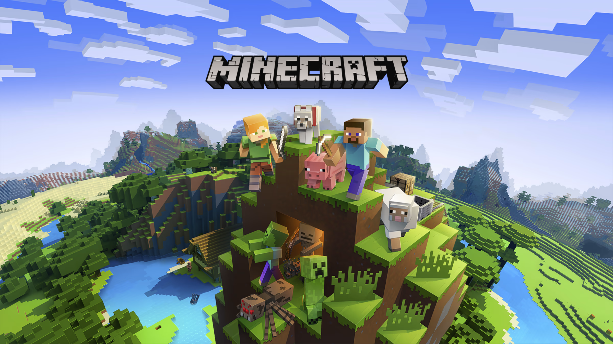
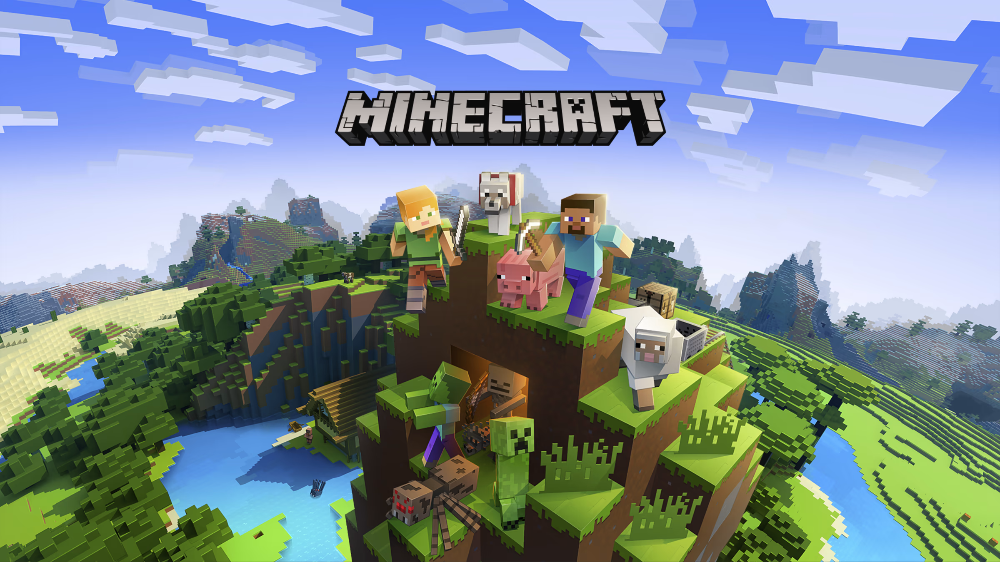

Josh's Webpage
My Interests
One of my biggest interests is playing my favorite video game, Minecraft. I enjoy building, fighting and using command blocks (which inspired me to take coding classes).

One of my biggest interests is playing my favorite video game, Minecraft. I enjoy building, fighting and using command blocks (which inspired me to take coding classes).
